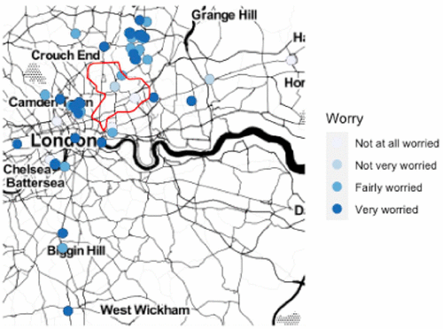
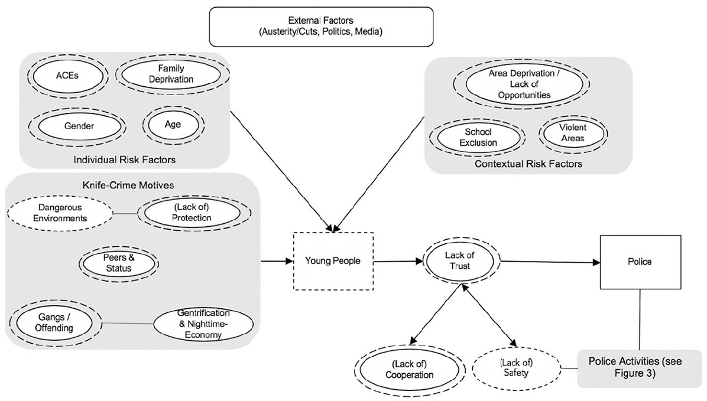
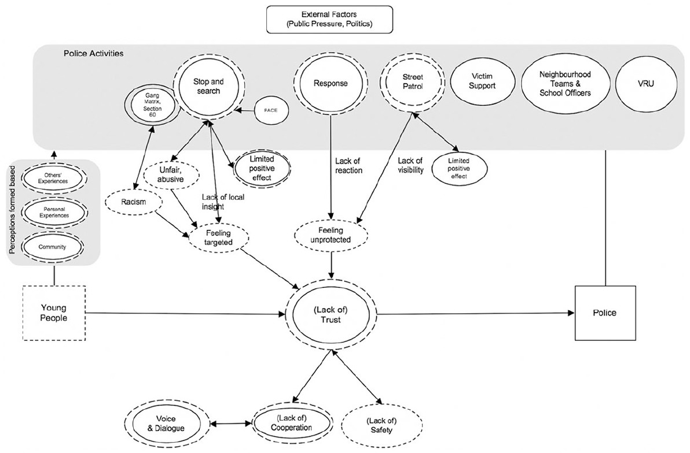

“Knife crime” is a term which has come to describe a range of offences where sharp objects, usually knives are involved, which has generated much discourse in media (e.g. BBC), policy (e.g. Home Office), and in academic research.
A commonly highlighted theme in this topic is the lack of trust between young people and police, which leads to young people’s worry about knife crime, which impacts on their everyday lives, and on issues of communication between young eople and police.
In 2019 Artemis Skarlatidou, Froi Legaspi, and I received funding from the Not Equal network, a UKRI funded network, that aims to foster collaborations to create the conditions for digital technology to support social justice.
Our project sought to gain insight into how young people perceive and experience knife crime, how it influences their quality of lives, and how their perceptions match with those of policing experts, to make recommendations to improve trust and communication.
Our paper Understanding Knife Crime and Trust in Police with Young People in East London contains the results of this project, some highlights of which I will summarise here. The paper is accessible to all via gold open access here: https://journals.sagepub.com/doi/10.1177⁄00111287211029873
Study summary
Our study sought to understand how young people experience worry about knife crime as they go about their everyday lives, and to map out the mental models which young people have of the issue, and identify any misconceptions and gaps between their views and those of the police.
To do this, we worked with young people enrolled in two colleges based in East London. The young people were asked to download an experience sampling mobile application, which they could use to report any instances of worry as they went about their daily activities. We then also interviewed 16 of these young people, and 4 police officials, three of them part of a dedicated Youth Engagement team, and the fourth working within an Emergency Response team, using a mental models framework.
Highlighted results
The experience sampling mobile application collected 85 reports, of which 65 reports were of instances when the young people felt “fairly worried” or “very worried”. When asked about what made them feel worried, they provided the following answers:
18 reported: “I heard about someone having a knife,” 14 reported: “I saw a knife,” seven reported “I saw someone threaten to use a knife,” seven reported “I saw someone use a knife,” 19 reported “Other,” and 20 were cases where the person did not indicate why they felt worried. “Other” incidents included personal experiences with issues other than knife crime (e.g., “Someone drove past and shouted at me” or “Was being followed”), seeing something that evoked worry (e.g., “Saw guns”), or general knowledge of issues like gangs or drug dealing in the area.
Interestingly, the locations of these worry incidents were almost all outside of the study area (Hackney). This suggests that young people experience worrying incidents across their entire activity space, rather than in their immediate local areas.
 -Figure 1: Map of young people’s experiences with worry about knife related incidents across London. Hackney borough is highlighted in red.
Regarding mental models, our mental models revealed a larger overlap between the perceptions of police and young people than initially anticipated.
 -Figure 2: Top level mental model—Expert and young people’s perceptions of knife crime and motives. Singled-lined circles show expert concepts and dash-lined circles the concepts of young people. Squares do not symbolize concepts but they are being used to visualize how concepts are linked with each other and to whom they refer.
A prominent feature in young people’s mental models was the role of deprivation and social marginalization in knife crime, a knowledge they have mostly gained through their personal experiences and those of their peers and communities. Considering how strongly all young people we interviewed felt about this, regardless of their own ethnicity or personal experience, we suggest that those shaping the broader public health approach or work at the local level take this aspect into account. Young people are willing to engage in the knife-crime debate and cooperate in identifying solutions—but only if they feel included in the process and not targeted by it.
We found that young people proved extremely knowledgeable, especially regarding risks and motives of knife crime. Both young people and police experts highlight a lack of trust that leads to a lack of cooperation. This increases feelings of unsafety, leading to more knife-carrying. Interestingly, expert and lay interviews describe trust differently. Experts focus on “effectiveness” as both a source of trust and a requirement in “fighting crime” while young people emphasize the need of “fairness” to establish trust.
 - Figure 3: Expert and young people’s perceptions of policing activities and trust. Singled-lined circles show expert concepts and dash-lined circles the concepts of young people. Note that the size of the circle has no semantic interpretation.
Another interesting finding from the mental models of young people was that their awareness was not equal across all types of policing activities. While young people know about enforcement-based activities (they are particularly knowledgeable of police enforcement procedures for which they carry negative perceptions, most prominently stop-and-search, “Section 60” and the “Gang Matrix”) they are mostly unaware of community-building initiatives.
Recommendations
Based on our findings, we suggest three approaches to re-establish and build trust.
First, filling in the knowledge gaps. For example, police and other services could try to build young people’s knowledge of non-enforcement policing initiatives and publicize training and other activities which may have a positive impact in local communities.
Second, engage young people in developing knife-crime prevention practices in their communities. Their knowledge can be harnessed to make sure these initiatives are well-received. This is in line with similar suggestions made by the All Party Parliamentary Group for Children in the 2014 report and otherresearch.
And third, carry out further research on how young people interpret qualities which promote trust (i.e., professionalism, accountability, transparency, respect, fairness, empathy and protect, and serve attitudes) in specific local contexts. This may be particularly important in promoting a shared understanding and appreciation of these attributes in police forces and could be used to inform training and guidance on the way police-youth interactions are handled.
The paper
For full details on methodology, data, results, and recommendations, read the paper available in full open access here: https://journals.sagepub.com/doi/10.1177⁄00111287211029873